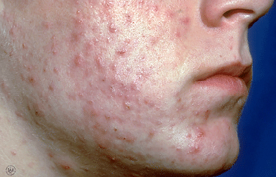
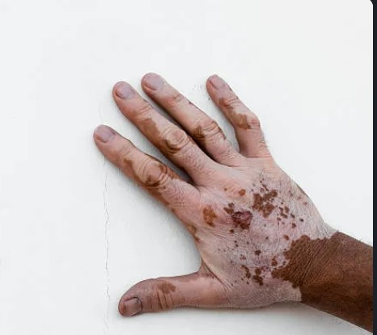
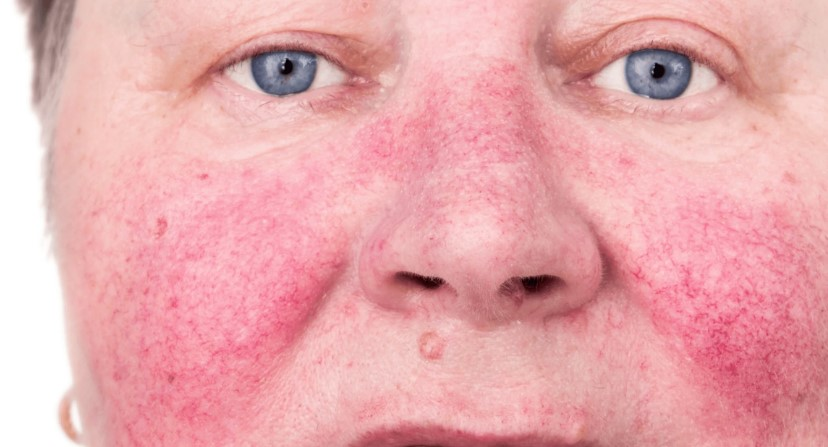

Various Dermatological Diseases

Acne
Acne is a common skin condition characterized by the presence of pimples or "zits" on the skin. It often occurs during adolescence but can affect people of all ages.

Ichthyosis
Ichthyosis is a genetic skin disorder that results in dry, scaly skin. It can vary in severity, with some individuals experiencing mild symptoms and others having more severe forms of the condition.

Vitiligo
Vitiligo is a skin condition that results in the loss of pigment from certain areas of the skin, leading to white patches or spots.

Rosacea
It is a long-term disease that causes reddened skin and pimples, usually on the face. It can also make the skin thicker and cause eye problems.